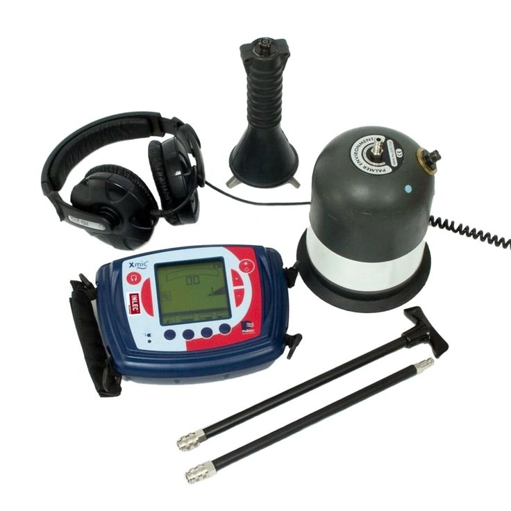
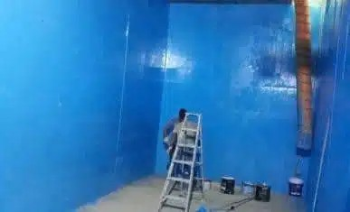
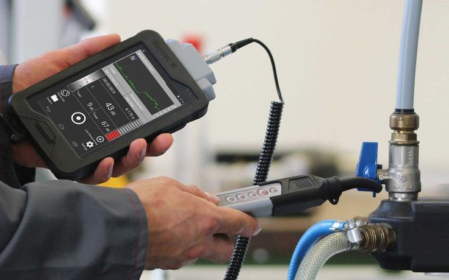
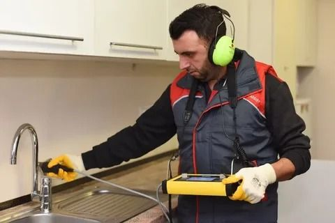

مقدمة
يعتبر فحص المنزل أو الفيلا قبل الشراء أو الإيجار، أو حتى بشكل دوري بعد السكن، خطوة أساسية لا يجب التهاون فيها، فهو الوسيلة الوحيدة التي تكشف لك الحقيقة الكاملة عن حالة المبنى بعيدًا عن المظهر الخارجي الذي قد يخفي مشكلات جوهرية في التمديدات والتأسيس والتشطيبات. ولهذا يتزايد الطلب على أفضل شركة فحص منازل بالرياض التي تمتلك الأجهزة والخبرة الكافية لتقديم تقرير فني دقيق وشامل.
لا يقتصر الفحص المنزلي على النظر السطحي للجدران والأرضيات، بل يشمل فحصًا تقنيًا متكاملًا لجميع الأنظمة الحيوية في المبنى، من التكييف والكهرباء إلى شبكات المياه والصرف والخزانات، وهو ما تقدمه شركة اعمار المنزل للخدمات المنزلية من خلال فريق فني متخصص ومعدات كشف حديثة تعمل بدون تكسير أو إتلاف.
وعند التعامل مع شركة اعمار المنزل لفحص المنازل بالرياض ستحصل على معاينة ميدانية شاملة تغطي كل ركن في المبنى، بداية من السقف وحتى الأساسات، مع تقرير فني مفصل يوضح لك كل ملاحظة بدقة ووضوح حتى تتخذ قرارك الصحيح سواء كنت مقبلًا على الشراء أو تريد الاطمئنان على منزلك الحالي.
كما تقدم شركة اعمار المنزل لفحص الفلل والمنازل بالرياض خدماتها لجميع أنواع العقارات السكنية والتجارية، مع الالتزام بمعايير فحص دقيقة تجعلها الخيار الأول لدى عملاء الرياض.
ومن أهم ما يميز خدمة الفحص لدى شركة اعمار المنزل أنها لا تعتمد على التخمين أو الخبرة النظرية فقط، بل تستند إلى قياسات وأرقام دقيقة يتم توثيقها بالكامل، مما يمنح العميل أساسًا موضوعيًا لاتخاذ قراره، سواء كان قرار الشراء أو التفاوض على السعر أو تحديد أولويات الصيانة. وهذا ما يجعل الفرق واضحًا بين شركة تعتمد على النظر السطحي وأخرى تعتمد على منهجية فحص علمية مدروسة.
لماذا يعتبر فحص المنزل خطوة ضرورية؟
كثير من المشكلات الإنشائية والفنية لا تظهر للعين المجردة، وقد تتفاقم بمرور الوقت لتتحول إلى أعطال مكلفة. ومن أبرز أسباب أهمية الفحص:
- كشف العيوب الخفية قبل إتمام صفقة الشراء أو الإيجار.
- توفير تكاليف الإصلاح الباهظة في المستقبل.
- التأكد من سلامة الأنظمة الكهربائية والصحية.
- الاطمئنان على جودة التأسيس والتشطيبات.
- الحصول على تقرير موثق يمكن استخدامه في التفاوض على السعر.
- حماية أفراد الأسرة من مخاطر التسربات والرطوبة الخفية.
ولهذا توصي شركة فحص منازل بالرياض بعدم إتمام أي صفقة عقارية دون فحص فني شامل يوضح الحالة الحقيقية للمبنى.
ماذا يشمل فحص المنزل الشامل؟
تعتمد شركة اعمار المنزل للخدمات المنزلية على منهجية فحص متكاملة تغطي جميع الأنظمة الأساسية في المنزل، وفيما يلي أهم عناصر الفحص:
1. فحص التكييفات
يشمل هذا الجزء فحص كفاءة تشغيل وحدات التكييف، والتأكد من سلامة أنظمة التبريد وعدم وجود تسريبات في وحدات السبلت أو المركزي، بالإضافة إلى فحص أعمال العزل الحراري المرتبطة بها وتقييم استهلاكها للطاقة. ويكشف هذا الفحص عن أي أعطال مبكرة قد تكلف صاحب المنزل مبالغ كبيرة إذا تم إهمالها.
كما يتضمن فحص التكييفات التأكد من نظافة الفلاتر وكفاءة الضاغط، وقياس كمية الفريون داخل الدائرة، وفحص المواسير الموصلة بين الوحدة الداخلية والخارجية للتأكد من عدم وجود أي تسريب غاز قد يقلل من كفاءة التبريد ويرفع استهلاك الكهرباء دون أن يلاحظ صاحب المنزل السبب الحقيقي وراء ذلك.
2. فحص التسريبات

يعتمد فريق شركة اعمار المنزل على أجهزة كشف تسربات المياه الحديثة التي تعمل بتقنية الموجات فوق الصوتية والكاميرات الحرارية، مما يتيح تحديد مكان التسريب بدقة عالية دون الحاجة إلى تكسير الجدران أو الأرضيات. ويغطي هذا الفحص جميع شبكات المياه الظاهرة والمخفية داخل المبنى.
ولا يكتفي الفريق بتحديد وجود التسريب فقط، بل يحدد أيضًا حجمه ومصدره الدقيق، سواء كان ناتجًا عن تلف في وصلة، أو تآكل في ماسورة، أو خلل في تمديدات الحمامات والمطابخ، وهو ما يساعد العميل على تقدير تكلفة الإصلاح المطلوبة بدقة قبل اتخاذ أي قرار.
3. فحص الرطوبة
تنتشر مشكلات الرطوبة بشكل كبير في المباني القديمة أو تلك التي تعاني من ضعف في العزل، ويقوم الفريق الفني بفحص الجدران والأسقف باستخدام أجهزة قياس نسبة الرطوبة لتحديد المناطق المتأثرة قبل أن تتحول إلى مشكلة أكبر تشمل تعفن الدهانات أو تلف الأخشاب.
وتعد الرطوبة من أكثر المشكلات خداعًا لأصحاب المنازل، إذ قد تبدأ بعلامة بسيطة مثل تغير طفيف في لون الدهان، ثم تتوسع تدريجيًا لتؤثر على سلامة الجدران وتتسبب في روائح كريهة ومشكلات صحية لأفراد الأسرة، ولهذا يحرص فريق شركة اعمار المنزل على فحص جميع الجدران الداخلية والخارجية وربط أي ملاحظة برطوبة بمصدرها المحتمل، سواء كان تسربًا من السطح أو من شبكة المواسير الداخلية.
4. فحص الخزانات

يتم فحص خزانات المياه الأرضية والعلوية من حيث حالة العزل، ووجود أي شروخ أو تسربات، ومدى نظافة المياه المخزنة، بالإضافة إلى التأكد من إحكام إغلاق الأغطية وسلامة التمديدات المرتبطة بالخزان.
كما يقيّم الفريق الفني حالة الدعامات الحاملة للخزانات العلوية، ويتأكد من عدم وجود صدأ في الخزانات المعدنية أو تشققات في الخزانات الخرسانية، ويرصد أي علامة تدل على قرب انتهاء العمر الافتراضي لطبقة العزل الحالية، بحيث يحصل العميل على صورة كاملة عن حالة الخزان واحتياجه إلى صيانة أو إعادة عزل.
5. فحص الجدران
يشمل هذا الجزء الكشف عن الشروخ الإنشائية والتشققات السطحية، وتقييم حالة الدهانات والتشطيبات، والتأكد من عدم وجود أي علامات تدل على مشكلات في الأساسات أو الهيكل الإنشائي للمبنى.
ويميز الفريق الفني بين الشروخ السطحية البسيطة الناتجة عن انكماش الدهانات، والشروخ الإنشائية الأعمق التي قد تدل على هبوط في التربة أو ضعف في الأساسات، وهو تمييز بالغ الأهمية يساعد العميل على معرفة هل المشكلة تجميلية بسيطة أم تحتاج إلى تدخل هندسي متخصص.
6. فحص المواسير واختبارها

يقوم الفنيون باختبار شبكة المواسير من خلال قياس الضغط والتأكد من ثباته، وهو ما يكشف عن أي تسريبات دقيقة قد لا تظهر بشكل مباشر، بالإضافة إلى فحص حالة الوصلات والصمامات للتأكد من متانتها وعدم تآكلها.
ويشمل هذا الاختبار أيضًا فحص مواسير الصرف الصحي للتأكد من انسيابية التصريف وخلوها من الانسدادات أو التسريبات المحتملة، حيث تعتبر مشكلات الصرف من أكثر الأسباب التي تؤدي إلى رطوبة الأرضيات وظهور روائح كريهة داخل المنزل إذا لم يتم اكتشافها مبكرًا.
معدات ووسائل الفحص المستخدمة
يعتمد فريق شركة اعمار المنزل لفحص المنازل بالرياض على مجموعة من الأجهزة الحديثة التي تضمن دقة النتائج، ومنها:
- كاميرات التصوير الحراري لكشف فروق درجات الحرارة الدالة على التسربات والرطوبة.
- أجهزة الاستماع الصوتي عالية الحساسية لتحديد مكان التسريبات المخفية.
- أجهزة قياس نسبة الرطوبة داخل الجدران والأسقف.
- أجهزة قياس ضغط المياه لاختبار سلامة شبكة المواسير.
- كاميرات فحص داخلي للمواسير الضيقة والخزانات.
وهذا التنوع في الأجهزة يمكّن الفريق من تغطية جميع جوانب المبنى دون الاعتماد على التخمين، وهو ما يميز شركة فحص منازل بالرياض المحترفة عن الفحص التقليدي الذي يعتمد على العين المجردة فقط.
كيف تتم عملية الفحص خطوة بخطوة؟
أولًا: المعاينة الأولية
يبدأ فريق شركة اعمار المنزل لفحص المنازل بالرياض بجولة ميدانية شاملة على المبنى من الداخل والخارج لتحديد النقاط التي تحتاج إلى فحص دقيق.
ثانيًا: الفحص الفني بالأجهزة المتخصصة

يعتمد الفريق على أجهزة كشف حديثة تشمل كاميرات حرارية، وأجهزة استماع صوتي، وأجهزة قياس رطوبة، وذلك لفحص كل نظام من أنظمة المبنى بدقة عالية دون أي أضرار.
ثالثًا: توثيق الملاحظات
يتم تسجيل كل ملاحظة أثناء الفحص مع توثيقها بالصور لضمان الشفافية الكاملة أمام العميل.
رابعًا: إعداد التقرير الفني
بعد الانتهاء من الفحص يحصل العميل على تقرير مفصل يوضح حالة كل عنصر تم فحصه، مع تصنيف الملاحظات حسب درجة أهميتها وأولوية معالجتها.
خامسًا: تقديم التوصيات
يقدم فريق شركة اعمار المنزل للخدمات المنزلية توصيات عملية للعميل حول أولويات الصيانة أو الإصلاح المطلوبة بناءً على نتائج الفحص.
متى تحتاج إلى فحص شامل لمنزلك؟
هناك عدة مناسبات يوصى فيها بإجراء فحص فني شامل للمنزل أو الفيلا، ومنها:
- قبل إتمام عملية شراء عقار جديد.
- قبل توقيع عقد إيجار طويل الأمد.
- بعد مرور عدة سنوات على السكن دون فحص دوري.
- عند ملاحظة أي علامات غير طبيعية مثل الرطوبة أو الشروخ.
- قبل البدء في أعمال ترميم أو تجديد شاملة.
- عند الرغبة في بيع العقار والتأكد من حالته قبل عرضه.
وتؤكد شركة فحص منازل بالرياض أن الفحص الدوري الوقائي يوفر على أصحاب المنازل الكثير من التكاليف غير المتوقعة على المدى الطويل.
أهمية الفحص قبل شراء العقار
يعد فحص المنزل قبل الشراء من أهم الخطوات التي تحمي المشتري من الوقوع في صفقة تحتوي على عيوب خفية. فكثير من العقارات تبدو في مظهرها الخارجي ممتازة، لكنها قد تخفي مشكلات جوهرية في الأساسات أو الشبكات الداخلية.
ومن خلال الاستعانة بـ شركة اعمار المنزل لفحص الفلل والمنازل بالرياض، يحصل المشتري على تقرير فني موثق يمكنه استخدامه في:
- التفاوض على سعر العقار بناءً على الملاحظات الفنية.
- اتخاذ قرار الشراء بثقة كاملة.
- تحديد أولويات الصيانة المطلوبة بعد الانتقال.
- تجنب المفاجآت المكلفة بعد إتمام الصفقة.
الفرق بين الفحص السطحي والفحص الاحترافي
الفحص السطحي
يعتمد على النظر المباشر دون استخدام أجهزة متخصصة، وغالبًا ما يغفل عن:
- التسريبات المخفية داخل الجدران أو تحت الأرضيات.
- مشكلات الرطوبة غير الظاهرة للعين.
- ضعف ضغط المواسير الذي لا يظهر إلا بالاختبار.
- حالة العزل الداخلي للخزانات.
الفحص الاحترافي
تعتمد شركة فحص منازل بالرياض على أجهزة كشف متطورة تساعد في:
- تحديد التسريبات بدقة دون تكسير.
- قياس نسب الرطوبة الفعلية داخل الجدران.
- اختبار ضغط شبكة المواسير بشكل علمي دقيق.
- تقييم حالة الخزانات من الداخل والخارج.
ولهذا يفضل عملاء الرياض التعامل مع شركة اعمار المنزل للخدمات المنزلية التي تعتمد أسلوبًا احترافيًا مبنيًا على أجهزة فحص دقيقة بدلًا من الاعتماد على الفحص البصري فقط.
وتكمن القيمة الحقيقية للفحص الاحترافي في أنه يمنح العميل يقينًا مبنيًا على قياسات فعلية بدلًا من الانطباعات الشخصية، فبينما قد يرى شخص عادي جدارًا سليمًا في ظاهره، يكتشف الجهاز المتخصص فرق حرارة طفيف يدل على وجود رطوبة متسللة خلف الطبقة السطحية، وهو الفارق الذي يحدد فعليًا جودة الفحص ومدى إمكانية الاعتماد على نتائجه.
أخطاء شائعة عند فحص المنزل
من خلال خبرة شركة اعمار المنزل لفحص المنازل بالرياض تبين أن هناك أخطاء متكررة يقع فيها بعض أصحاب العقارات، ومنها:
- الاكتفاء بالفحص البصري دون أجهزة متخصصة.
- إهمال فحص الخزانات ضمن الفحص الشامل.
- عدم اختبار ضغط المواسير قبل الشراء.
- تجاهل فحص الرطوبة في الجدران الداخلية.
- الاعتماد على تقارير غير موثقة بالصور.
- تأجيل الفحص الدوري بعد سنوات من السكن.
وتوضح شركة اعمار المنزل للخدمات المنزلية أن تجنب هذه الأخطاء يوفر على العميل الكثير من المشكلات المستقبلية المكلفة.
لماذا يفضل العملاء شركة اعمار المنزل للخدمات المنزلية؟
عند البحث عن أفضل شركة فحص منازل بالرياض يحرص العملاء على اختيار جهة تمتلك الخبرة والمصداقية والأجهزة المتخصصة.
ولهذا يفضل الكثيرون شركة اعمار المنزل للخدمات المنزلية لما تتميز به من:
- أجهزة كشف حديثة تعمل بدقة عالية دون تكسير.
- فريق فني متخصص في فحص جميع أنظمة المبنى.
- تقرير فني مفصل وموثق بالصور.
- سرعة الاستجابة والوصول لجميع أحياء الرياض.
- أسعار مناسبة تتلاءم مع حجم الفحص المطلوب.
- الالتزام الكامل بالمواعيد المتفق عليها.
- حياد تام في التقييم دون تحيز لصالح البائع أو المشتري.
كما تعمل شركة اعمار المنزل لفحص الفلل والمنازل بالرياض على تطوير أدواتها وأساليبها باستمرار لتقديم خدمة فحص دقيقة تواكب أحدث المعايير الفنية.
خدمات شركة اعمار المنزل للخدمات المنزلية
لا تقتصر خدمات شركة اعمار المنزل للخدمات المنزلية على فحص المنازل فقط، بل تقدم مجموعة متكاملة من الحلول المنزلية التي تساعد العملاء في الحفاظ على عقاراتهم بأفضل حالة.
ومن أبرز الخدمات:
- فحص المنازل والفلل الشامل.
- كشف تسربات المياه.
- عزل خزانات المياه.
- عزل الأسطح المائي والحراري.
- صيانة وترميم المباني.
كما توفر شركة اعمار المنزل لفحص المنازل بالرياض حلولًا مخصصة للأفراد والمستثمرين العقاريين والشركات على حد سواء.
نخدم جميع أحياء الرياض
تقدم شركة فحص منازل بالرياض خدماتها في جميع مناطق الرياض، ومنها:
- حي النرجس.
- حي الياسمين.
- حي الملقا.
- حي العارض.
- حي حطين.
- حي الصحافة.
- حي الندى.
- حي الربيع.
- حي الوادي.
- حي التعاون.
- حي الغدير.
- حي قرطبة.
- حي السويدي.
- حي الشفا.
- حي بدر.
- حي العزيزية.
- حي لبن.
وتوفر شركة اعمار المنزل للخدمات المنزلية سرعة استجابة عالية لضمان الوصول إلى العميل في أقصر وقت ممكن داخل جميع هذه الأحياء.
ما الذي يحدد تكلفة فحص المنزل؟
تختلف تكلفة الفحص الشامل من عقار لآخر بناءً على عدة عوامل، أهمها مساحة المبنى وعدد الأدوار وعدد الأنظمة المطلوب فحصها، إضافة إلى نوع العقار سواء كان فيلا مستقلة أو شقة أو مبنى تجاري. وتحرص شركة اعمار المنزل للخدمات المنزلية على تقديم عرض سعر واضح للعميل قبل بدء العمل، دون أي رسوم إضافية مفاجئة بعد الانتهاء من الفحص.
ومن العوامل الأخرى التي قد تؤثر على التكلفة أيضًا حالة العقار العامة، فالمباني القديمة التي تحتاج إلى فحص أعمق لأنظمتها الكهربائية والصحية قد تستغرق وقتًا أطول مقارنة بالمباني الحديثة، وهو ما يوضحه الفريق الفني للعميل بشفافية كاملة أثناء تحديد موعد الفحص.
نصائح قبل حجز خدمة فحص المنزل
لضمان الحصول على أفضل نتيجة من عملية الفحص، تنصح شركة اعمار المنزل لفحص المنازل بالرياض العملاء باتباع النصائح التالية:
- تحديد الهدف من الفحص مسبقًا، سواء كان قبل الشراء أو فحصًا دوريًا وقائيًا.
- توفير إمكانية الوصول إلى جميع أجزاء المبنى بما في ذلك الأسطح والخزانات.
- تجهيز أي مستندات سابقة تخص أعمال صيانة أو عزل تمت في المبنى.
- حضور صاحب العقار أو ممثله أثناء الفحص للاطلاع المباشر على الملاحظات.
- طلب نسخة موثقة من التقرير الفني بعد الانتهاء من الفحص.
- مناقشة أولويات الإصلاح مع الفريق الفني بناءً على النتائج.
وتؤكد شركة اعمار المنزل للخدمات المنزلية أن التحضير الجيد قبل موعد الفحص يساعد في إنجاز العمل بكفاءة أعلى ويمنح العميل نتائج أكثر دقة وشمولية.
الأسئلة الشائعة
كم يستغرق فحص المنزل الشامل؟
يعتمد الوقت على مساحة العقار وعدد الأنظمة المطلوب فحصها، لكن تحرص شركة اعمار المنزل لفحص المنازل بالرياض على إنجاز الفحص بدقة وفي وقت مناسب لا يرهق العميل.
هل الفحص يشمل تكسير أي جزء من المبنى؟
لا، تعتمد شركة اعمار المنزل للخدمات المنزلية على أجهزة كشف حديثة تكتشف المشكلات دون الحاجة إلى أي تكسير أو إتلاف في المبنى.
هل أحصل على تقرير مكتوب بعد الفحص؟
نعم، يحصل العميل على تقرير فني مفصل وموثق بالصور يوضح جميع الملاحظات والتوصيات الخاصة بحالة العقار.
هل يمكن طلب فحص جزء معين فقط من المنزل؟
نعم، يمكن للعميل طلب فحص عنصر محدد مثل الخزانات أو التسريبات فقط، أو الاستعانة بالفحص الشامل لجميع أنظمة المبنى حسب الحاجة.
هل الفحص مناسب للفلل والشقق معًا؟
نعم، تقدم شركة فحص منازل بالرياض خدماتها لجميع أنواع العقارات السكنية بما في ذلك الفلل والشقق والمباني التجارية.
خلاصة المقال
إن الاستعانة بأفضل شركة فحص منازل بالرياض تمنحك رؤية واضحة وصادقة عن الحالة الحقيقية لعقارك، سواء كنت مقبلًا على شراء منزل جديد أو ترغب في الاطمئنان على سلامة منزلك الحالي. فالفحص الشامل يكشف المشكلات الخفية قبل أن تتحول إلى أعطال مكلفة، ويمنحك القدرة على اتخاذ قرارات مدروسة بناءً على تقرير فني دقيق وموثق.
وتغطي خدمة الفحص التي تقدمها شركة اعمار المنزل للخدمات المنزلية جميع الجوانب الحيوية في المبنى، من فحص التكييفات والتسريبات إلى فحص الرطوبة والخزانات والجدران، وصولًا إلى اختبار المواسير للتأكد من سلامتها الكاملة، وذلك باستخدام أجهزة كشف حديثة تعمل بدقة عالية دون أي تكسير أو إتلاف.
وسواء كنت تبحث عن فحص شامل قبل إتمام صفقة عقارية، أو تريد فحصًا دوريًا وقائيًا لمنزلك الحالي، فإن التواصل مع شركة اعمار المنزل لفحص الفلل والمنازل بالرياض يمنحك راحة بال كاملة ويضمن لك اتخاذ القرار الصحيح بثقة.
تواصل مع فريق إعمار المنزل الآن
معاينة فنية شاملة وتقرير مفصل عن حالة منزلك — تواصل معنا اليوم.